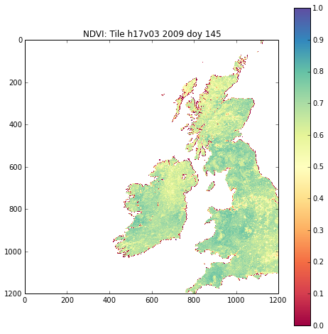
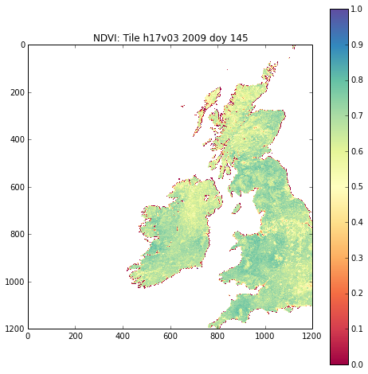

A3. Advanced notes: Scientific and Numerical Python¶
A3.1 Pulling Compressed netCDF Files¶
Sometimes, such as when we want to pull data from netCDF files from some data site such as http://www.globalbedo.org, we might find that ‘older style’ formats have been used, such as netCDF3 which might not have internal compression.
To save storage space, it is common to compress such files extrenally (i.e. to gzip a file).
That makes direct reading from a url a bit more tricky, and in such cases, we may as well uncompress the file to a local temporary file.
Doing this in Python¶
What we are going to do is to write a class to download a gzipped file from a url and return a filename that can be read by other functions.
The file is available as gzurl.py, in the directory files/python.
To be able to import this, we have to put files/python in the path where Python looks for modules:
import sys,os
# put local directory into the path
sys.path.insert(0,os.path.abspath('files%spython'%os.sep))
# import module
from gzurl import gzurl
help(gzurl)
Help on class gzurl in module gzurl:
class gzurl(__builtin__.object)
| Download gzipped url to a local file or string
|
| Prof. P. Lewis, UCL,
| Thu 10 Oct 2013 12:01:00 BST
| p.lewis@ucl.ac.uk
|
| Methods defined here:
|
| __del__(self)
| Destriuctor
|
| Tidy up
|
| __init__(self, url, filename=None, store=False, file=True)
| initialise class instance
|
| Parameters:
|
| url : url of gzipped file
|
| Options:
|
| filename:
| specify a filename explicitly, rather than
| a temporary file (default None)
| store : boolean flag to store the uncompressed
| data in self.data (default false)
| file : boolean flag to store data to a file
| (default True)
|
| close(self)
| Tidy up
|
| read(self, url)
| read gzipped data from url
| and uncompress
|
| ----------------------------------------------------------------------
| Data descriptors defined here:
|
| __dict__
| dictionary for instance variables (if defined)
|
| __weakref__
| list of weak references to the object (if defined)
You can look through the file `gzurl.py <files/python/gzurl.py>`__ at your leisure, but it is of interest to see how we have done this.
We need to load the following modules to do this:
urllib2, io, gzip, tempfile:
import urllib2, io, gzip, tempfile
The first thing we do is attempt to open a file specified from a url:
# codes for url specification on globalbedo.org
years = range(1998,2012)
codes = [95,95,97,97,26,66,54,54,29,25,53,56,56,78]
XX = dict(zip(years,codes))
year = 2009
root = 'http://www.globalbedo.org/GlobAlbedo%d/mosaics/%d/0.5/monthly/'%\
(XX[year],year)
# filename formatting string: use %02d for month eg 01 for 1
month = 1
url = root + '/GlobAlbedo.%d%02d.mosaic.5.nc.gz'%(year,month)
print url
# open file from url
f = urllib2.urlopen(url)
http://www.globalbedo.org/GlobAlbedo56/mosaics/2009/0.5/monthly//GlobAlbedo.200901.mosaic.5.nc.gz
We then read data from that with the statement:
bdata = f.read()
# which looks like this:
bdata[:50]
'x1fx8bx08x08xf5xe71Rx00x03GlobAlbedo.200901.mosaic.5.ncx00xecxdbwxTUxfexc7qx10'
We then create a buffered I/O stream from this using io.BytesIO, which is the form we want the information in for the next part:
f = urllib2.urlopen(url)
fileobj = io.BytesIO(f.read())
Next, we use the module gzip.GzipFile which simulates the methods of a gzip file:
gzip.GzipFile(fileobj=fileobj)
<gzip _io.BytesIO object at 0x105aea950 0x105bd2890>
And then we read from this:
f = urllib2.urlopen(url)
data=gzip.GzipFile(fileobj=io.BytesIO(f.read())).read()
This is now binary of netCDF format in this case.
Next, we need to write these data to a file. In this case, we don’t want to really save the data anywhere, so we want to use a temporary file.
In Python, you can create a temporary file using the module tempfile, which creates a temporary (unique) file on the system.
tmp = tempfile.NamedTemporaryFile(delete=False)
print tmp.name
/var/folders/pt/z0y8dmcd7d77cs_0hnygpwh80000gn/T/tmpN1LPzf
So we write the data to this file:
tmp.write(data)
Then, after we have done something with the data, we will want to tidy up and delete the file:
tmp.unlink(tmp.name)
To use this module then:
import sys,os
# put local directory into the path
sys.path.insert(0,os.path.abspath('python'))
# import local module gzurl
from gzurl import gzurl
import gdal
def readGA(root='data/',year=2009,month=1,layer = 'BHR_VIS',filename=None):
'''
Method to read a GlobAlbedo file from earlier
'''
file_template = 'NETCDF:"%s":%s'
# allow filename to be overridden from filename=
filename = filename or root + 'GlobAlbedo.%d%02d.mosaic.5.nc'%(year,month)
g = gdal.Open ( file_template % ( filename, layer ) )
if g is None:
raise IOError
data = g.ReadAsArray()
# return a numpy array
return(np.array(data))
# codes for url specification on globalbedo.org
years = range(1998,2012)
codes = [95,95,97,97,26,66,54,54,29,25,53,56,56,78]
XX = dict(zip(years,codes))
year = 2009
root = 'http://www.globalbedo.org/GlobAlbedo%d/mosaics/%d/0.5/monthly/'%\
(XX[year],year)
print root
# filename formatting string: use %02d for month eg 01 for 1
month = 1
url = root + '/GlobAlbedo.%d%02d.mosaic.5.nc.gz'%(year,month)
# read the gzipped file
f = gzurl(url)
# read the netCDF file from f.filename
nc = readGA(filename=f.filename)
print nc
http://www.globalbedo.org/GlobAlbedo56/mosaics/2009/0.5/monthly/
[[ nan nan nan ..., nan nan
nan]
[ nan nan nan ..., nan nan
nan]
[ nan nan nan ..., nan nan
nan]
...,
[ 0.67017049 0.67017049 0.67017049 ..., 0.67199522 0.67199522
0.67199522]
[ 0.67017049 0.67017049 0.67017049 ..., 0.67199522 0.67199522
0.67199522]
[ 0.67017049 0.67017049 0.67017049 ..., 0.67199522 0.67199522
0.67199522]]
Alternatively, to read all of the files into the directory files/data for the year 2011 and keep them:
import sys,os
# put local directory into the path
sys.path.insert(0,os.path.abspath('files%spython'%os.sep))
# import local module gzurl
from gzurl import gzurl
import gdal
# codes for url specification on globalbedo.org
years = range(1998,2012)
codes = [95,95,97,97,26,66,54,54,29,25,53,56,56,78]
XX = dict(zip(years,codes))
year = 2009
root = 'http://www.globalbedo.org/GlobAlbedo%d/mosaics/%d/0.5/monthly/'%\
(XX[year],year)
for month0 in range(12):
# filename formatting string: use %02d for month eg 01 for 1
base = 'GlobAlbedo.%d%02d.mosaic.5.nc'%(year,month0+1)
url = root + base + '.gz'
# specify a local filename
# work out how / why this works ...
local = os.path.join('data{0}'.format(os.sep),base)
# read the gzipped file
print local
f = gzurl(url,filename=local)
# read the netCDF file from f.filename
# read the gzipped file
nc = readGA(filename=f.filename)
data/GlobAlbedo.200901.mosaic.5.nc
data/GlobAlbedo.200902.mosaic.5.nc
data/GlobAlbedo.200903.mosaic.5.nc
data/GlobAlbedo.200904.mosaic.5.nc
data/GlobAlbedo.200905.mosaic.5.nc
data/GlobAlbedo.200906.mosaic.5.nc
data/GlobAlbedo.200907.mosaic.5.nc
data/GlobAlbedo.200908.mosaic.5.nc
data/GlobAlbedo.200909.mosaic.5.nc
data/GlobAlbedo.200910.mosaic.5.nc
data/GlobAlbedo.200911.mosaic.5.nc
data/GlobAlbedo.200912.mosaic.5.nc
Doing this in unix¶
That’s not too complicated, but you might often do this sort of thing from unix instead:
!rm -f data/GlobAlbedo.200901.mosaic.5.nc.gz
!wget -O data/GlobAlbedo.200901.mosaic.5.nc.gz \
http://www.globalbedo.org/GlobAlbedo56/mosaics/2009/0.5/monthly/GlobAlbedo.200901.mosaic.5.nc.gz
--2014-10-07 14:03:42-- http://www.globalbedo.org/GlobAlbedo56/mosaics/2009/0.5/monthly/GlobAlbedo.200901.mosaic.5.nc.gz
Resolving www.globalbedo.org... 128.40.73.100
Connecting to www.globalbedo.org|128.40.73.100|:80... connected.
HTTP request sent, awaiting response... 200 OK
Length: 4540366 (4.3M) [application/x-gzip]
Saving to: `data/GlobAlbedo.200901.mosaic.5.nc.gz'
100%[======================================>] 4,540,366 21.6M/s in 0.2s
2014-10-07 14:03:42 (21.6 MB/s) - `data/GlobAlbedo.200901.mosaic.5.nc.gz' saved [4540366/4540366]
!gunzip -f data/GlobAlbedo.200901.mosaic.5.nc.gz
!ls -l data/GlobAlbedo.200901.mosaic.5.nc
-rw-rw-r--. 1 plewis plewis 18669672 Sep 12 2013 data/GlobAlbedo.200901.mosaic.5.nc
A3.2 Logical combinations in numpy¶
Let’s read in a different GlobAlbedo dataset.
This time, we will read 8 day tile data (day of year: 001, 009 etc. every 8 days).
The tile we will read is h17v03 which covers most of the UK.
import sys,os
sys.path.insert(0,os.path.abspath('files%spython'%os.sep))
from gzurl import gzurl
from netCDF4 import Dataset
years = range(1998,2012)
codes = [95,95,97,97,26,66,54,54,29,25,53,56,56,78]
XX = dict(zip(years,codes))
year = 2009
tile = 'h17v03'
root = 'http://www.globalbedo.org/GlobAlbedo%d/tiles/%d/%s/'%\
(XX[year],year,tile)
# filename formatting string: use %03d for doy eg 001 for 1
doy = 145
url = root + 'GlobAlbedo.%d%03d.%s.nc.gz'%(year,doy,tile)
# see if you can make sense of this complicated formatting
filename = url.split('/')[-1].replace('.gz','')
local_file = 'files{0}data{0}{1}'.format(os.sep,filename)
# try to read local file
try:
nc = Dataset(local_file,'r')
except:
f = gzurl(url,filename=local_file)
nc = Dataset(f.filename,'r')
f.close()
# now pull some data
vis = np.array(nc.variables['BHR_VIS'])
nir = np.array(nc.variables['BHR_NIR'])
ndvi = (nir - vis)/(nir + vis)
-c:5: RuntimeWarning: invalid value encountered in divide
Now plot it:
import pylab as plt
# figure size
plt.figure(figsize=(8,8))
# title
plt.title('NDVI: Tile %s %d doy %03d'%(tile,year,doy))
# colour map
cmap = plt.get_cmap('Spectral')
# plot the figure
plt.imshow(ndvi,interpolation='none',cmap=cmap,vmin=0.,vmax=1.)
# colour bar
plt.colorbar()
<matplotlib.colorbar.Colorbar instance at 0x10687ce60>

We notice in this dataset that there are some ‘funnies’ (unreliable data) around the coastline, which are probably due to negative reflectance values.
We could try, for instance to build a mask for these, supposing them to be some other ‘invalid’ number, but in this dataset, we have some other data layers that can help:
nc.variables.keys()
[u'metadata',
u'DHR_VIS',
u'DHR_NIR',
u'DHR_SW',
u'BHR_VIS',
u'BHR_NIR',
u'BHR_SW',
u'DHR_sigmaVIS',
u'DHR_sigmaNIR',
u'DHR_sigmaSW',
u'BHR_sigmaVIS',
u'BHR_sigmaNIR',
u'BHR_sigmaSW',
u'Weighted_Number_of_Samples',
u'Relative_Entropy',
u'Goodness_of_Fit',
u'Snow_Fraction',
u'Data_Mask',
u'Solar_Zenith_Angle',
u'lat',
u'lon',
u'crs']
# better have a look at the individual bands as well
# plot the vis and nir bands
plt.figure(figsize=(8,8))
plt.title('VIS: Tile %s %d doy %03d'%(tile,year,doy))
cmap = plt.get_cmap('Spectral')
plt.imshow(vis,interpolation='none',cmap=cmap,vmin=0.,vmax=1.)
plt.colorbar()
plt.figure(figsize=(8,8))
plt.title('NIR: Tile %s %d doy %03d'%(tile,year,doy))
cmap = plt.get_cmap('Spectral')
plt.imshow(nir,interpolation='none',cmap=cmap,vmin=0.,vmax=1.)
plt.colorbar()
<matplotlib.colorbar.Colorbar instance at 0x107236d88>

Apart from a few minor outliers, these data look fine.
Let’s try developing a mask from Data_Mask:
mask = np.array(nc.variables['Data_Mask']).astype(bool)
# plot it
plt.figure(figsize=(8,8))
plt.title('Data_Mask: Tile %s %d doy %03d'%(tile,year,doy))
cmap = plt.get_cmap('Spectral')
plt.imshow(mask,interpolation='none',cmap=cmap,vmin=0.,vmax=1.)
plt.colorbar()
<matplotlib.colorbar.Colorbar instance at 0x1068ab710>
The mask is True where there are valid (land) data.
In a masked array, we want the opposite of this.
We can’r directly use not, but we can use the bitwise operatoe ~:
Use the mask in a masked array:
import numpy.ma as ma
vis = ma.array(vis,mask=~mask)
nir = ma.array(nir,mask=~mask)
ndvi = (nir - vis)/(nir + vis)
plt.figure(figsize=(8,8))
plt.title('NDVI: Tile %s %d doy %03d'%(tile,year,doy))
cmap = plt.get_cmap('Spectral')
plt.imshow(ndvi,interpolation='none',cmap=cmap,vmin=0.,vmax=1.)
plt.colorbar()
<matplotlib.colorbar.Colorbar instance at 0x1072aa290>
The data mask hasn’t solved the problem for NDVI then.
A problem might arise from a small number of negative reflectance values in the dataset.
We can create masks for these:
mask1 = vis < 0.
mask2 = nir < 0
print 'number of -ve VIS pixels',np.sum(mask1)
print 'number of -ve NIR pixels',np.sum(mask2)
number of -ve VIS pixels 317
number of -ve NIR pixels 934
and we can combine them with a bitwise operator, | (or) or & (and) in this case (reversing the conditions):
mask = np.array(nc.variables['Data_Mask']).astype(bool) & (vis > 0) & (nir > 0)
# plot it
plt.figure(figsize=(8,8))
plt.title('Data_Mask: Tile %s %d doy %03d'%(tile,year,doy))
cmap = plt.get_cmap('Spectral')
plt.imshow(mask,interpolation='none',cmap=cmap,vmin=0.,vmax=1.)
plt.colorbar()
<matplotlib.colorbar.Colorbar instance at 0x107c865f0>
vis = ma.array(vis,mask=~mask)
nir = ma.array(nir,mask=~mask)
ndvi = (nir - vis)/(nir + vis)
plt.figure(figsize=(8,8))
plt.title('NDVI: Tile %s %d doy %03d'%(tile,year,doy))
cmap = plt.get_cmap('Spectral')
plt.imshow(ndvi,interpolation='none',cmap=cmap,vmin=0.,vmax=1.)
plt.colorbar()
<matplotlib.colorbar.Colorbar instance at 0x107320830>

This hasn’t entirely sorted it either.
Next have a look at a few more fields before going further:
# demonstration of multiple subplots
datasets = np.array([['DHR_VIS','DHR_NIR'],\
['DHR_sigmaVIS','DHR_sigmaNIR'],\
['Data_Mask','Weighted_Number_of_Samples']])
# load up all datasets in dict data
data = {}
dlist = datasets.copy().flatten()
for d in dlist:
data[d] = np.array(nc.variables[d])
mask = data['Data_Mask'].astype(bool) &( \
(data['DHR_VIS'] > 0.) | \
(data['DHR_NIR'] > 0.))
s = datasets.shape
# how big for each subplot ?
big = 5
# set the figure size
plt.figure(figsize=(s[1]*big,s[0]*big))
# colorbars for subplots are a bit tricky
# here's one way of sorting this
# using dataset shapes
from matplotlib import gridspec
gs = gridspec.GridSpec(s[0],s[1])
# colour map
cmap = plt.get_cmap('Spectral')
for i,d0 in enumerate(datasets):
for j,d in enumerate(d0):
data[d] = ma.array(data[d],mask=~mask)
axes = plt.subplot(gs[i,j])
axes.set_title(d)
# no axis ticks
axes.set_xticks([])
axes.set_yticks([])
im = axes.imshow(data[d],cmap=cmap,interpolation='none',vmin=0.)
plt.colorbar(im)
ndvi = (data['DHR_NIR'] - data['DHR_VIS'])/(data['DHR_NIR'] + data['DHR_VIS'])
plt.figure(figsize=(8,8))
plt.title('NDVI: Tile %s %d doy %03d'%(tile,year,doy))
cmap = plt.get_cmap('Spectral')
plt.imshow(ndvi,interpolation='none',cmap=cmap,vmin=0.,vmax=1.)
plt.colorbar()
<matplotlib.colorbar.Colorbar instance at 0x116dd8ab8>
 

So it looks as though we need to filter on 'Weighted_Number_of_Samples' as well, and perhaps on uncertainty:
# demonstration of multiple subplots
datasets = np.array([['DHR_VIS','DHR_NIR'],\
['DHR_sigmaVIS','DHR_sigmaNIR'],\
['Data_Mask','Weighted_Number_of_Samples']])
# load up all datasets in dict data
data = {}
dlist = datasets.copy().flatten()
for d in dlist:
data[d] = np.array(nc.variables[d])
mask = data['Data_Mask'].astype(bool) & \
(data['Weighted_Number_of_Samples'] > 0.5) & \
(data['DHR_sigmaVIS'] <= 0.8) & \
(data['DHR_sigmaNIR'] <= 0.8) & \
(data['DHR_VIS'] >= 0.) & \
(data['DHR_NIR'] >= 0.)
s = datasets.shape
# how big for each subplot ?
big = 5
# set the figure size
plt.figure(figsize=(s[1]*big,s[0]*big))
# colorbars for subplots are a bit tricky
# here's one way of sorting this
# using dataset shapes
from matplotlib import gridspec
gs = gridspec.GridSpec(s[0],s[1])
# colour map
cmap = plt.get_cmap('Spectral')
for i,d0 in enumerate(datasets):
for j,d in enumerate(d0):
data[d] = ma.array(data[d],mask=~mask)
axes = plt.subplot(gs[i,j])
axes.set_title(d)
# no axis ticks
axes.set_xticks([])
axes.set_yticks([])
im = axes.imshow(data[d],cmap=cmap,interpolation='none',vmin=0.)
plt.colorbar(im)

ndvi = (data['DHR_NIR'] - data['DHR_VIS'])/(data['DHR_NIR'] + data['DHR_VIS'])
plt.figure(figsize=(13,13))
plt.title('NDVI: Tile %s %d doy %03d'%(tile,year,doy))
cmap = plt.get_cmap('Spectral')
plt.imshow(ndvi,interpolation='none',cmap=cmap,vmin=0.,vmax=1.)
plt.colorbar()
<matplotlib.colorbar.Colorbar instance at 0x115bb1cb0>

Thats quite a bit better, but still not perfect.
Experiment with the conditions of the masking to see how you can get rid of the odd pixels (the ‘red’ ones in the above). Do *not* filter on ``ndvi`` itself, as we *might* be interested in negative ``ndvi`` values in some cases.
Once you think you have some useful filtering conditions, try it out on some different dates and tiles.
Some other things to try:
- Write parts of the code as functions.
- Put the code developed into a file and run it from the unix command line.
A3.3 Solar Radiation model¶
If you followed the advanced material for the previous chapter, you will have noted the use of pyephem as a module that we can use for calculating the solar zenith angle.
There is a similar package pysolar that is a little easier to use for solar radiation calculations.
We will install a package pysolar into your user area:
at a unix prompt, type:
!easy_install --user pysolar
Searching for pysolar
Best match: Pysolar 0.5
Processing Pysolar-0.5-py2.7.egg
Pysolar 0.5 is already the active version in easy-install.pth
Using /Users/plewis/.local/lib/python2.7/site-packages/Pysolar-0.5-py2.7.egg
Processing dependencies for pysolar
Finished processing dependencies for pysolar
If all goes well, the text that comes up at the terminal should tell you that this has installed (e.g. in /home/plewis/.local/lib/python2.7/site-packages/Pysolar-0.5-py2.7.egg).
We can test to see if we can load and run this package:
# from https://github.com/pingswept/pysolar/wiki/examples
import Pysolar
from datetime import datetime
# UCL lat/lon
lat = 51.5248
lon = -0.1336
hour = 12
minute = 0
second = 0
month = 10 # ie October
day = 13
year = 2013
d = datetime(year, month, day, hour, minute, second)
altitude_deg = Pysolar.GetAltitude(lat, lon, d)
zenith = 90. - altitude_deg
# W m^-2
solar = Pysolar.solar.radiation.GetRadiationDirect(d, altitude_deg)
print zenith,solar
59.5052193764 834.866993323
def solar(year, month, day, hour, lat_deg, lon_deg, minute=0, second=0):
'''Return solar zenith and clear sky radiation
for given lat, lon and time/date
'''
from datetime import datetime
import Pysolar
d = datetime(year, month, day, hour, minute, second)
altitude_deg = Pysolar.GetAltitude(lat_deg, lon_deg, d)
# W m^-2
solar_rad = Pysolar.solar.radiation.GetRadiationDirect(d, altitude_deg)
return 90. - altitude_deg,solar_rad
# or import from local module
import sys,os
# put local directory into the path
sys.path.insert(0,os.path.abspath('files%spython'%os.sep))
from solar import solar
import numpy as np
# UCL lat/lon
lat = 51.5248
lon = -0.1336
second = 0
month = 10 # ie October
day = 13
year = 2013
radiation_fields = '#hour zenith solar_rad month day lat lon'
radiation = []
for hour in xrange(24):
for minute in xrange(60):
thr = hour + minute/60.
# append data line as tuple
radiation.append((thr,) + \
solar(year, month, day, hour, lat, lon, minute=minute) +\
(month, day, lat, lon))
# convert to numpy array
# transpose so access eg zenith as
# radiation[0]
radiation = np.array(radiation).T
# so we have radiation as
print radiation.shape
print radiation.ndim
print radiation
(7, 1440)
2
[[ 0.00000000e+00 1.66666667e-02 3.33333333e-02 ..., 2.39500000e+01
2.39666667e+01 2.39833333e+01]
[ 1.36158787e+02 1.36145826e+02 1.36131901e+02 ..., 1.36561804e+02
1.36551449e+02 1.36540121e+02]
[ 0.00000000e+00 0.00000000e+00 0.00000000e+00 ..., 0.00000000e+00
0.00000000e+00 0.00000000e+00]
...,
[ 1.30000000e+01 1.30000000e+01 1.30000000e+01 ..., 1.30000000e+01
1.30000000e+01 1.30000000e+01]
[ 5.15248000e+01 5.15248000e+01 5.15248000e+01 ..., 5.15248000e+01
5.15248000e+01 5.15248000e+01]
[ -1.33600000e-01 -1.33600000e-01 -1.33600000e-01 ..., -1.33600000e-01
-1.33600000e-01 -1.33600000e-01]]
import pylab as plt
plt.title('Solar radiation at UCL')
plt.xlabel('hour')
plt.ylabel('solar radiation / Wm^-2')
plt.plot(radiation[0],radiation[2])
[<matplotlib.lines.Line2D at 0x10681fed0>]
import pylab as plt
plt.title('Solar zenith UCL')
plt.xlabel('hour')
plt.ylabel('solar zenith / degrees')
plt.plot(radiation[0],radiation[1])
[<matplotlib.lines.Line2D at 0x1068bde50>]
E3.3 Exercise: Solar radiation modelling
This is a better modelling of solar radiation that we did in the main part of the class today.
There are several things we could do with this.
For example, if we know the albedo, we can calculate the absorbed radiation as previously done (if we assume for the moment albedo is constant with solar zenith angle ... which it isn’t, generally), but can now extend over the whole day and integrate to get the total energy per metre squared.
From above, we have power per unit area, in Watts per metre squared.
This is the same as energy per unit area per second (i.e. the same as J/(m s)).
So if we sum up the solar radiation from above over the day and multiply by the time interval in seconds (time interval above is 1 minute, so 60 seconds), we get:
power_density = radiation[2].sum() * 60
print 'power per unit area = %.3f MJ / m^2'%(power_density/10**6)
power per unit area = 23.687 MJ / m^2
and we could now look at e.g. variations in this over the year (NB this will take some time to calculate if you step every day and minute, so we step every 30 minutes here):
import numpy as np
def radiation(year, month, day, lat, lon,minute_step=30):
rad = []
for hour in xrange(24):
for minute in xrange(0,60,minute_step):
thr = hour + minute/60.
# append data line as tuple
rad.append((thr,) + \
solar(year, month, day, hour, lat, lon, minute=minute) +\
(month, day, lat, lon))
# convert to numpy array
# transpose so access eg zenith as
# rad[0]
rad = np.array(rad).T
return rad
def days_in_month(month,year=2013):
''' number of days in month'''
import calendar
return calendar.monthrange(year,month)[1]
# UCL lat/lon
lat = 51.5248
lon = -0.1336
year = 2013
minute_step = 30
pd = []
for month in xrange(12):
ndays = days_in_month(month+1,year=year)
print month,ndays
for day in xrange(ndays):
rad = radiation(year, month+1, day+1, lat, lon,minute_step=minute_step)
pd.append([month+day/float(ndays),rad[2].sum() * 60 * minute_step])
pd = np.array(pd).T
0 31
1 28
2 31
3 30
4 31
5 30
6 31
7 31
8 30
9 31
10 30
11 31
import pylab as plt
plt.title('Power per unit area, UCL')
plt.xlabel('month')
plt.ylabel('Power per unit area / MJ m^-2')
plt.plot(pd[0],pd[1]/10**6)
[<matplotlib.lines.Line2D at 0x106abdc50>]

or, if we want to sum over a month:
# UCL lat/lon
lat = 51.5248
lon = -0.1336
year = 2013
pd = []
for month in xrange(12):
pd_month = []
ndays = days_in_month(month+1,year=year)
print month,ndays
for day in xrange(ndays):
rad = radiation(year, month+1, day+1, lat, lon)
pd_month.append([rad[2].sum() * 60 * 30])
pd_month = np.array(pd_month).T
pd.append([month,pd_month.sum()])
pd = np.array(pd).T
0 31
1 28
2 31
3 30
4 31
5 30
6 31
7 31
8 30
9 31
10 30
11 31
import pylab as plt
plt.title('Monthly total Power per unit area, UCL')
plt.xlabel('month')
plt.ylabel('Power per unit area / MJ m^-2')
plt.plot(pd[0],pd[1]/10**6)
[<matplotlib.lines.Line2D at 0x107234d10>]

E3.3 Improved Solar Radiation Modelling¶
Using the material above and the global albedo datasets from the main class material, calculate an improved estimate of the total absorbed power per unit area per month (MJ per m^2 per month) for the Earth land surface.
You should do this with a function that will take as input the year and returns the monthly total absorbed power density (MJ m^-2 per month) and the monthly total power density (MJ m^-2 per month).
You might have an optional argument minute_step to control the resolution of the calculation as above.
You could then use this to derive latitudinal variations in annual and latitudinal total absorbed power per unit area.